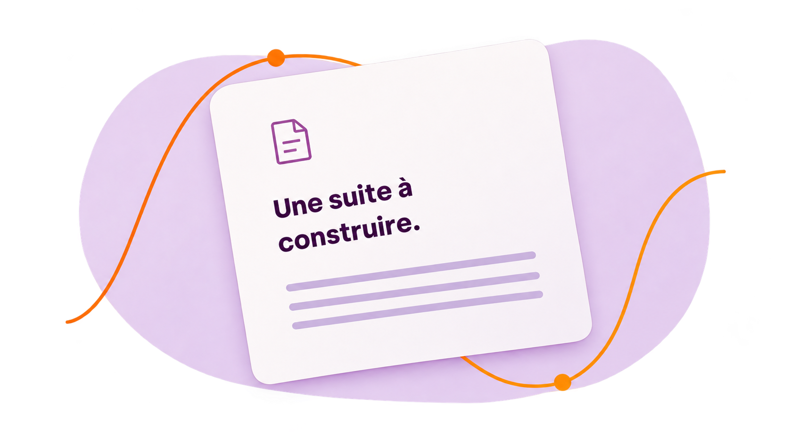

Une démarche ne se porte pas seule
Identifier les bonnes personnes, comprendre les informations disponibles et préparer la prochaine étape. Pas de promesse impossible. Un accompagnement plus clair.
Parcours illustratif · Aucun dossier réellement transmis

Écoute et dignité
Orientation adaptée
Responsabilités visibles
Le fil de l’accompagnement
Chaque situation est différente. Ce parcours présente une manière possible d’organiser un accompagnement.
01
Exprimer votre besoin
Décrire ce qui vous préoccupe, avec les informations que vous souhaitez partager.
02
Identifier un soutien
Comprendre quel type de structure ou de professionnel peut répondre à votre besoin.
03
Clarifier le dossier
Organiser les références, les échanges connus et les questions encore sans réponse.
04
Préparer la suite
Définir une action possible, un interlocuteur et une date de point de situation.
Le fil de l’accompagnement
Chaque situation est différente. Ce parcours présente une manière possible d’organiser un accompagnement.
Les associations
Un premier accueil, de l’écoute et une orientation vers les dispositifs appropriés.
Accueil & orientation
Les associations
Un premier accueil, de l’écoute et une orientation vers les dispositifs appropriés.
Accueil & orientation
Les associations
Un premier accueil, de l’écoute et une orientation vers les dispositifs appropriés.
Accueil & orientation
Les associations
Un premier accueil, de l’écoute et une orientation vers les dispositifs appropriés.
Accueil & orientation
À votre rythme
Commencer par une question, c’est déjà un premier pas. Découvrez à quoi pourrait ressembler votre espace d’accompagnement.
Comprendre, puis choisir votre prochain pas.
Vous restez libre de votre rythme et des informations que vous partagez.